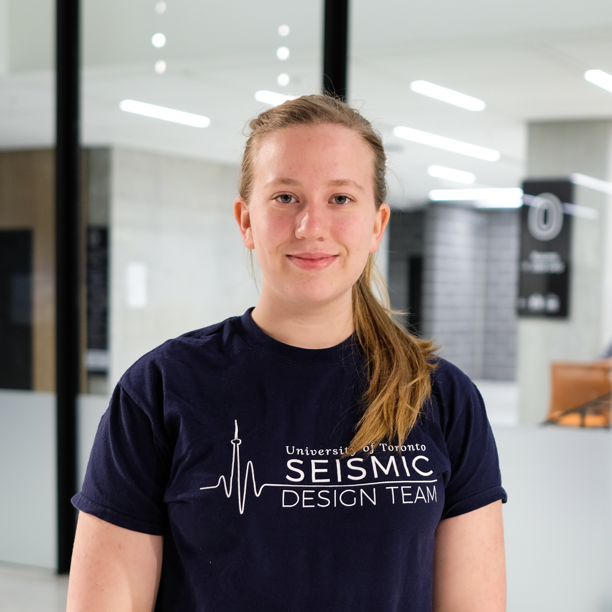

The University of Toronto Seismic Design Team (UTSD) is comprised of both engineering and architectural undergraduates who collaborate on designing, building, and analyzing a scaled balsa wood model of a high rise structure.
In the annual EERI Undergraduate Seismic Design Competition (SDC), the team will be judged on the structural model’s seismic performance, delivery of an oral presentation, poster design, architectural design and general workmanship.
Collectively, all of these criteria are captured in a final score called the Final Annual Building Income (FABI) which is used to determine the winner.
By designing a robust yet cost effective structure, UTSD team members are given an excellent hands-on opportunity to learn the basic principles of structural and seismic engineering in an out of classroom environment.
Scroll down to learn more about the team this year!
Meet the Team

Katherine Norris - Team Captain
I decided it was time to try something more challenging than Lego.
Kevin Bi - Finance Lead
I joined Seismic Design Team to show Ivy League kids what’s up.

Philip Cline - Construction Lead
Jenny Autillo - Media and Graphics Lead
Jenny just finished her third year and is entering her work term. When she's not learning about structures and design, she enjoys downtown strolls and tempura and she really likes structures that don’t collapse….. and those that look good.
Liam Ma - Design and Analysis Co-Lead
Hello! My name is Liam and I’m the Junior Lead on the Design and Analysis Team. I’m currently in my third year of civil engineering and interested in structural analysis and transportation. I use my engineering skills and knowledge to help design and create the best balsa wood tower. I like to spend my free time watching Netflix, eating, and sleeping in bed.
Kaison Cheung - Webmaster
I am a first year civil engineering student who likes to play basketball, do breakdancing, and build tower!
Daniel Pekar - Design and Analysis Co-Lead
Daniel is a Design and Analysis Senior Lead for the 2018/19 team. He and his team utilize S-Frame, AutoCAD, SolidWorks, Excel, pencil-and-paper, guessing-and-checking, and collectively shrugging their shoulders and saying "yeah it'll probably work" to accurately design and analyze the tower. His biggest fear is torsional modes and overlooked rule violations.
Kota Abe - Design and Analysis Co-Lead
I'm a third year civil engineering student. I joined seismic because most of our structural engineering courses are theoretical and I wanted to build something physical.
Jinbo Yu - Architecture Lead
Passionate civil engineering student who always gets excited about architecture. What do we do? We make our tower look nicer.
Team Photo